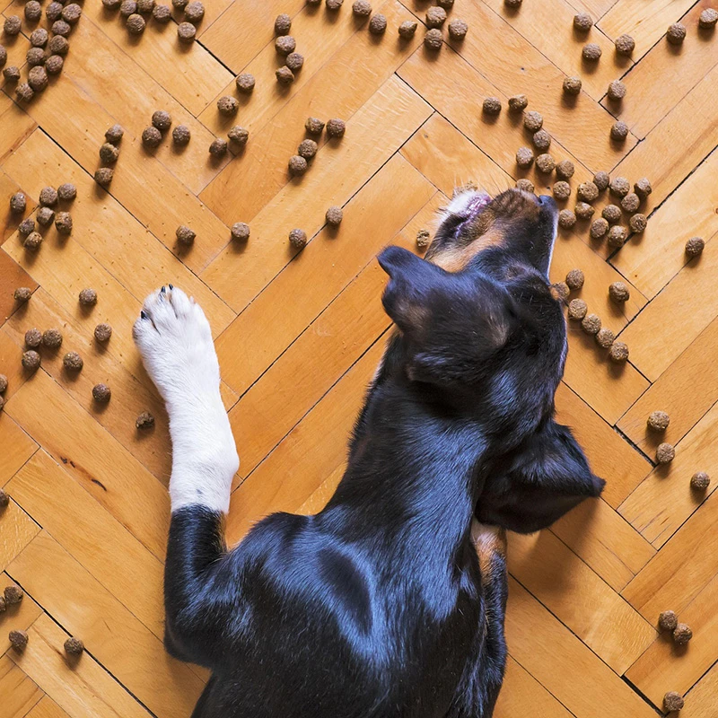
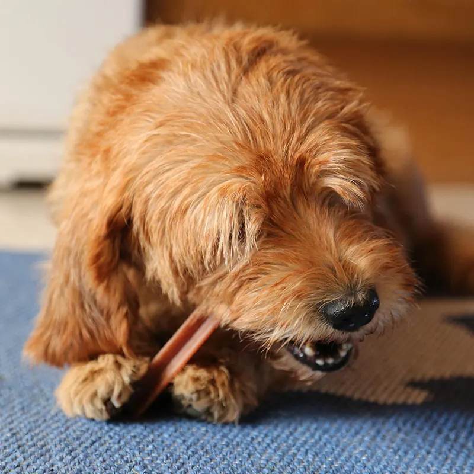
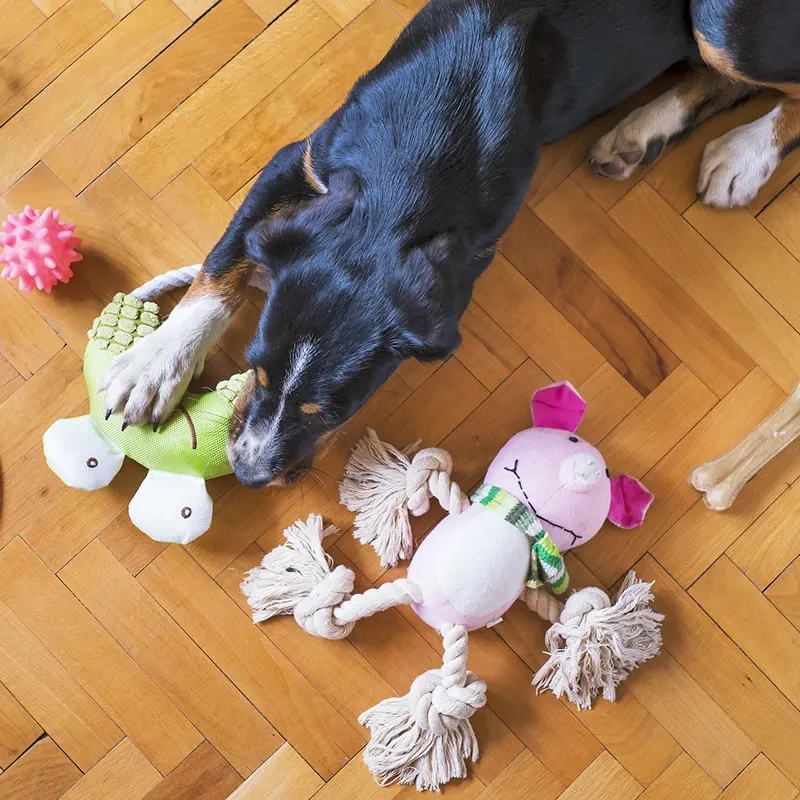
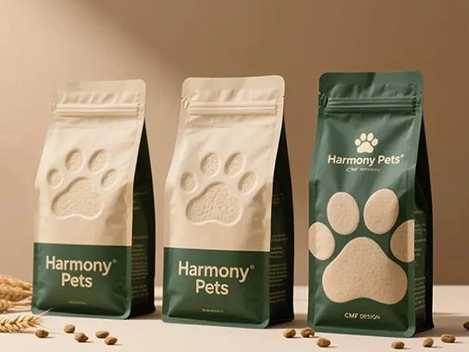
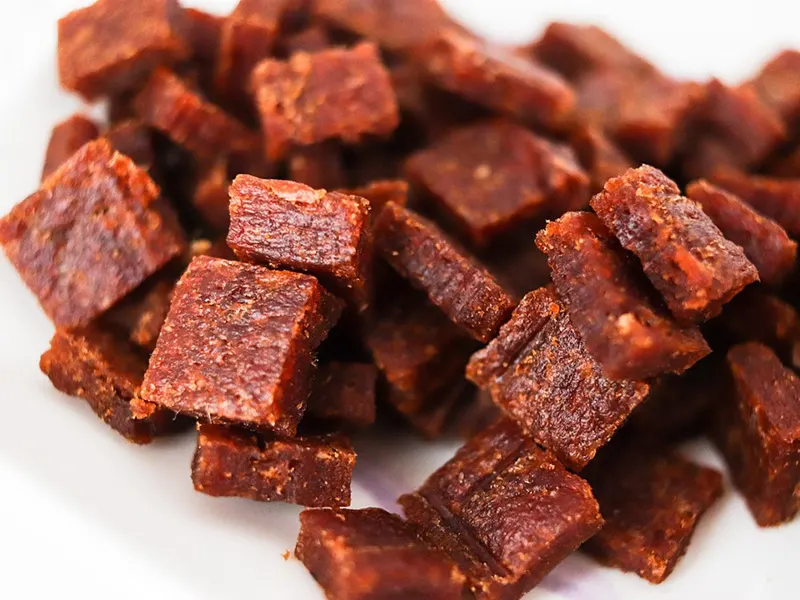
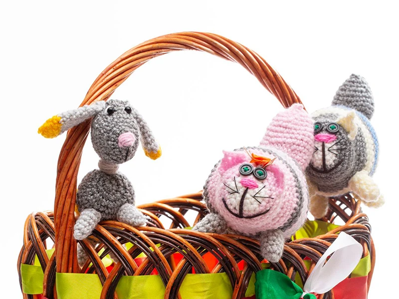

為什麼寵物需要吃飼料
飼料是寵物日常飲食中重要的營養來源。優質飼料會依照犬貓不同的年齡、體型與生活需求，搭配蛋白質、脂肪、碳水化合物、維生素及礦物質等營養，幫助維持健康的身體與正常活動。相較於單純餵食人類食物，完整均衡的寵物飼料更方便掌握每日所需營養。選擇適合毛孩的飼料，搭配充足飲水與良好的生活習慣，就是守護牠們健康成長的重要一步。
為什麼寵物需要吃飼料
為什麼寵物需要吃零食
零食不只是讓毛孩開心的小獎勵，也能成為飼主與寵物建立感情的好幫手。在訓練時適量給予零食，可以鼓勵毛孩完成正確行為，增加學習的意願；日常生活中，也能透過分享零食增進彼此的互動與陪伴。不過零食並不能取代主要飼料，應依照毛孩的體型與活動量適量餵食，並選擇成分單純、適合牠們需求的產品，讓美味與健康取得平衡。
為什麼寵物需要吃零食
為什麼寵物需要玩具
玩具是毛孩生活中不可缺少的陪伴用品。狗狗與貓咪天生具有探索、追逐、啃咬或狩獵等行為需求，適當的玩具能提供活動與刺激，幫助牠們消耗體力、保持活力，也能增加日常生活的趣味性。飼主透過玩具與毛孩互動，更能建立親密的信任關係。選擇玩具時，應注意材質、大小與耐用程度，並依照寵物的習慣挑選，讓玩樂成為健康又幸福的生活日常。
為什麼寵物需要玩具寵物飼料｜每日所需的均衡營養
優質寵物飼料是毛孩日常飲食的重要來源，依照犬貓的年齡、體型與生活階段，提供適當比例的蛋白質、脂肪、維生素及礦物質等營養。選擇標示「完整且均衡」的產品，有助於滿足毛孩每日所需的營養需求。飼主也應依照包裝上的餵食建議，搭配毛孩的活動量與身體狀況調整份量，讓每一餐都成為守護健康的重要日常。

雞肉片｜高蛋白的美味選擇
雞肉富含優質蛋白質，能提供毛孩日常活動所需的營養，也是許多犬貓喜愛的肉類來源。雞肉片口感香脆、適口性佳，可以作為日常獎勵或訓練時的小點心。適量補充蛋白質，有助於維持正常的肌肉與身體機能。選擇成分單純、少添加的雞肉零食，讓毛孩享受美味的同時，也能吃得更安心。

寵物玩具｜玩樂、互動與探索的好夥伴
寵物玩具不只是娛樂用品，也能提供毛孩活動與探索的機會。透過追逐、啃咬、尋找及益智遊戲，可以增加日常生活中的刺激與互動，讓毛孩消耗體力並減少無聊。飼主也能利用玩具與毛孩一起遊戲，增進彼此的陪伴與感情。挑選玩具時，應依照毛孩的體型、咬合力與遊戲習慣選擇合適的尺寸與材質，並定期檢查玩具是否損壞，確保玩耍過程更加安全。
